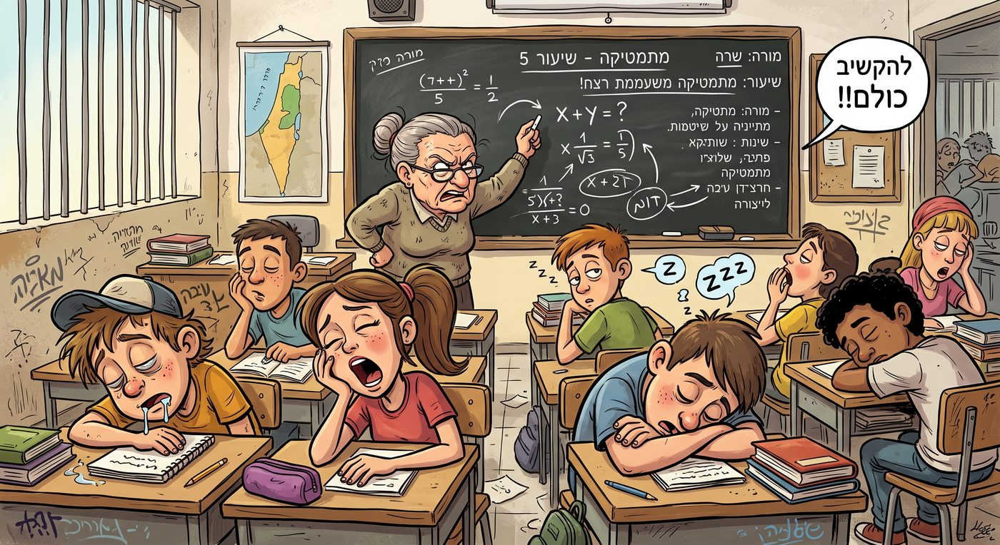
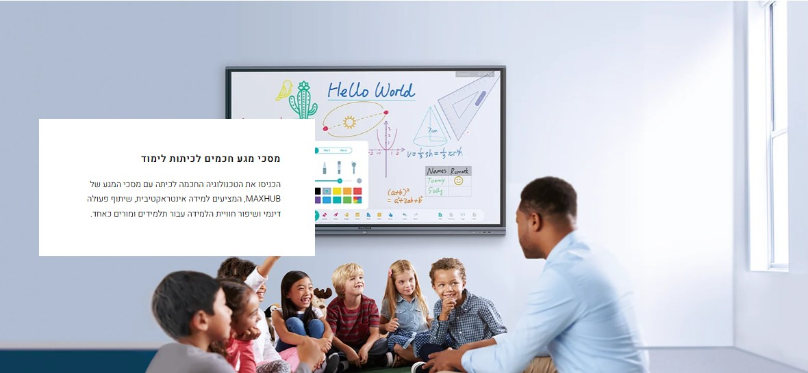
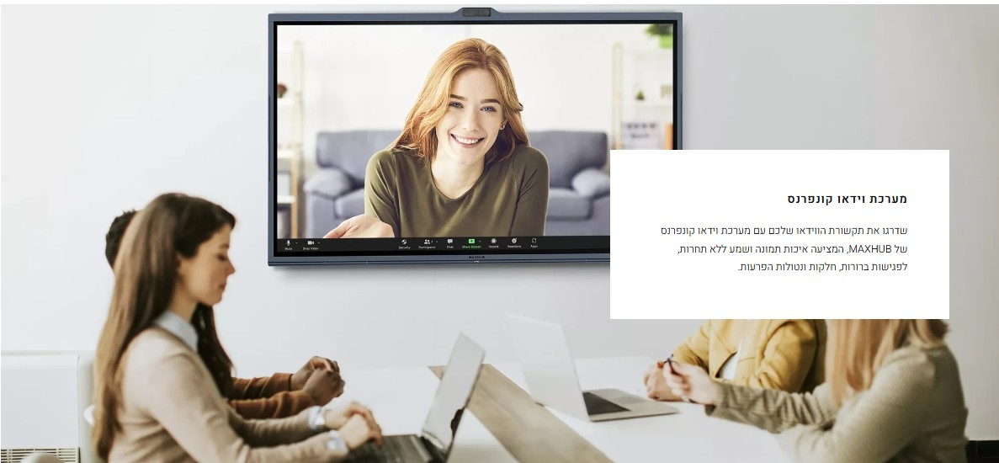

מסכי מגע חכמים לכיתות לימוד
הכניסו את הטכנולוגיה החכמה לכיתה עם מסכי המגע של MAXHUB — למידה אינטראקטיבית, שיתוף פעולה דינמי ושיפור חוויית הלמידה עבור תלמידים ומורים כאחד.


שיעורים מקוונים ולמידה מרחוק
חברו בין הכיתה לתלמידים מכל מקום — מערכת הוידאו קונפרנס של MAXHUB מציעה איכות תמונה ושמע ללא תחרות, לשיעורים וישיבות צוות ברורים, חלקים ונטולי הפרעות.

סרטון הדרכה — MAXHUB
לחצו על פרק כדי לקפוץ ישר אליו בסרטון
סקירה כללית — מסך הלימוד לעולם החינוך
הכירו את מסך MAXHUB בסיור קצר של יכולות המערכת
MAXHUB Smart Blackboard — הלוח החכם האינטראקטיבי
לחצו על פרק כדי לקפוץ ישר אליו בסרטון
למה נס מטח?
המובילה בחינוך
החברה המובילה בישראל במחשוב ובתקשוב מוסדות חינוך, עם ניסיון של למעלה מ-25 שנה.
זכיינית משרד החינוך
זכיינית משרד החינוך בפרויקט "מרכזים לוגיסטיים" וזכיינית מפעל הפיס לאספקת ציוד למוסדות חינוך.
פתרון מקצה לקצה
מהתכנון ועד היישום — אינטגרציה מלאה, הדרכת צוותי הוראה ושירות מקיף לאורך זמן.
"טכנולוגיה היא האמצעי. הצלחת הלקוח היא המטרה."
אילן זריהן, מנכ"ל נס מטח
דבר המנכ"ל המלא ←שאלות ותשובות
למה להחליף לוח וטוש במסך אינטראקטיבי?
מהן הבעיות העיקריות בלוח וטוש שמסך אינטראקטיבי פותר?
לוח וטוש מסורתי יוצר מספר אתגרים מרכזיים בכיתה הלימודית:
- אובדן קשב ומעורבות: קשה לשמור על ריכוז התלמידים בשיעורים ארוכים ללא אלמנטים ויזואליים ואינטראקטיביים.
- סרבול טכנולוגי: בזבוז זמן יקר על חיבור כבלים, הגדרות ותקלות טכניות בעת שילוב מצגות.
- קושי בלמידה היברידית: לוח וטוש אינו מאפשר לשלב בצורה חלקה תלמידים הלומדים מהבית יחד עם כיתה פרונטלית.
מה קורה עם חומר הלימוד? האם צריך לכתוב הכל מחדש בכל שיעור?
לא. מסך אינטראקטיבי מאפשר לנהל את תוכן השיעור בצורה דיגיטלית הוליסטית מקצה לקצה:
- הכנה מראש: יצירת תכנים אינטראקטיביים בקלות לפני השיעור.
- הקלטה בלחיצת כפתור: הקלטת השיעור, קול המורה ותוכן המסך באופן אוטומטי.
- הפצה ונגישות: העלאה ישירה של השיעורים והסיכומים לשרתי בית הספר או ל-Moodle לטובת תלמידים שנעדרו או לצורך חזרה למבחנים.
איך מסך המגע משפר את חווית הכתיבה לעומת לוח וטוש?
מסכי מגע מתקדמים מציעים חווית כתיבה טבעית המדמה כתיבה על נייר או לוח, ללא החסרונות של טושים שמתייבשים או נמחקים באופן חלקי:
- אפס השהיה (Near Zero Latency): התגובה של המסך מיידית וחלקה.
- זיהוי עוצמת לחיצה: עובי הקו משתנה לפי עוצמת הלחיצה של המורה.
- 50 נקודות מגע בו-זמנית: מאפשר למספר משתתפים לכתוב ולעבוד על המסך בו-זמנית.
כיצד המסך תומך בלמידה שיתופית וחיבור מכשירי התלמידים (BYOD)?
בניגוד ללוח רגיל שבו רק המורה כותב, מסך אינטראקטיבי מאפשר למידה דו-כיוונית — תלמידים יכולים לשתף באופן אלחוטי את מסך הנייד, הטאבלט או הלפטופ שלהם:
- תמיכה בכל הפרוטוקולים המובילים: AirPlay, Chromecast, Miracast ו-DLNA.
- פיצול מסך חכם: הצגת עד 4 מסכי תלמידים במקביל (ועד 9 בתוכנות מתקדמות) להשוואה, עבודה בקבוצות וביקורת עמיתים.
כמה עולה מערכת אחת מלאה?
בתקופת ההרצה מחיר המערכת הוא רק 16,950 ש"ח בתוספת מע"מ. המחיר כולל:
- מסך מגע 86 אינץ'
- מחשב מוטמע במערכת: מחשב Windows 11 מלא
- שני לוחות מחיקים — מימין ומשמאל — לכתיבה מסורתית בטוש, מסונכרנים עם המסך הראשי
- הובלה לאתר והתקנה מלאה
- שלוש שנים אחריות מלאה באתר
בסכום של מערכת אחת אפשר להחליף את כל הלוחות המחיקים בבית הספר — אולי ההשקעה גדולה מדי?
בואו נפרק את הרכיבים כדי להבין את העלות האמיתית:
- מחשב Windows חייב להיות בכל כיתה בכל מקרה — מחשב כזה עולה כ-3,000 ש"ח בפני עצמו.
- המסך עצמו מחליף ערכת מקרן מלאה בכיתה — וגם לזה יש עלות ידועה.
- שני לוחות מחיקים מסורתיים — כמו פעם, מסונכרנים למסך הראשי — למי שעדיין רוצה לכתוב בטוש.
- שלוש שנות אחריות מלאה על שלושת הרכיבים — שלוש שנים בלי החלפת נורות למקרן ובלי תשלום על תיקוני מחשבים. גם זה שווה כסף.
ומעבר לזה — יש דברים שקשה לכמת בכסף:
כמה שיעורים פרטיים יחסכו לתלמידים בזכות היכולת להיכנס לענן הבית-ספרי ולצפות בשיעור מוקלט — עם המורה שהתלמיד מכיר, בסביבה שהוא מכיר ובמונחים שהוא מכיר?
דמיינו שכבר יש לוחות חכמים בכל השכבה, וצריך מרתון חזרה למבחן במתמטיקה — אבל יש רק מורה זמין אחד. המורה מעביר שיעור סימולטני לכל השכבה מכיתה אחת: תלמיד מכיתה אחרת יכול לשאול שאלה, כולם רואים ושומעים אותו, והמורה משיב לו. האם אפשר לכמת יתרון כזה בכסף?
ואת ברכת השנה הטובה יעביר ראש העיר מלשכתו לכלל התלמידים בשידור חי לכל הכיתות — גם זה שווה זהב.
כבר היו בעבר מסכים לכיתות — למה הם הפסיקו להיות פופולריים?
בעבר לא היה יצרן ברמה של MAXHUB העולמית שלקח על עצמו לייצר פתרון עובד — במיוחד לכיתות לימוד. הפתרון כולל:
- מסך עמיד למכות ולעבודה יומיומית בכיתה.
- זווית צפייה רחבה — התלמיד רואה היטב גם כשהוא יושב בזווית למסך.
- פיתוח תכנים ייעודי למסך.
- תמיכה ושלוש שנות אחריות על ידי נציגות רצינית בישראל — יבואן מוכר הפועל בתחום משנות ה-80.
והפתרון מגיע בדיוק בזמן שהתנאים הבשילו בארץ: אינטרנט סיבים כמעט בכל בית ספר, מסכים התומכים ברזולוציית 4K, צבעים ורגישות שלא היו בעבר — וההחלטות הפדגוגיות והתקציב בידי המנהל/ת.
יש מאות התקנות בעולם וכבר עשרות התקנות בארץ — עם ממליצים מרוצים.
מהו החזר ההשקעה (ROI) הכלכלי במעבר למסך חכם?
מעבר למסך אינטראקטיבי מייצר חיסכון כספי ישיר וארוך טווח:
- חיסכון משמעותי בשיעורים פרטיים לתלמידים: תלמיד שנעדר צופה בשיעור המוקלט של המורה שלו — במקום שיעור פרטי בתשלום.
- ביטול הרכש השוטף של טושים, מוחקים וציוד מתכלה.
- חיסכון דרסטי בהדפסות, טונרים ונייר.
- ביטול הצורך בהחלפת נורות מקרן יקרות והתייעלות אנרגטית.
- עמידות גבוהה לאורך זמן בזכות זכוכית מוקשחת (Mohs Level 7) למניעת שריטות ושברים.
כיצד משתלבות טכנולוגיות בינה מלאכותית (AI) בלמידה עם המסך?
המסכים כוללים רכיבי מעבד ייעודיים ל-AI המאפשרים תכונות מתקדמות:
- Circle & Go: הקפת טקסט או אלמנט בעיגול על המסך לקבלת מידע מיידי מוויקיפדיה או תמונות מהרשת.
- Live Subtitles: יצירת כתוביות ותרגום בזמן אמת עבור סרטונים המוקרנים בכיתה.
- Video Pilot: חלוקה אוטומטית של סרטוני וידאו ארוכים לפרקים וסיכומים ממוקדים.
האם המסך מגן על בריאות המורים והתלמידים?
כן, למסכים אינטראקטיביים יש יתרון בריאותי בולט על פני לוח וטוש או מקרנים:
- הגנה על העיניים: נטרול אור כחול ומניעת הבהובים (Flicker-Free בתקן TÜV הרשמי), יחד עם זווית צפייה רחבה וסינון השתקפויות (Anti-Glare).
- היגיינה: זכוכית אנטי-בקטריאלית המונעת העברת חיידקים במגע של מורים ותלמידים במסך.
- סביבה נקייה: ללא ריחות טושים או אבק גיר מזיק.
איך צוות ה-IT מנהל ומפקח על המסכים בכיתות?
מערכות ניהול בענן (כגון MAXHUB Pivot) מאפשרות לצוות המחשוב:
- לעדכן גרסאות, להדליק/לכבות מסכים ולפתור תקלות מרחוק מבלי להגיע פיזית לכיתה.
- לשדר הודעות חירום, התראות או לוחות זמנים באופן מיידי לכל המסכים בבית הספר בו-זמנית.
- לקבל דוחות על זמני שימוש לצורך התייעלות באנרגיה ומשאבים.
רוצים לשמוע עוד?
נשמח להגיע לבית הספר שלכם להדגמה ללא התחייבות.
לחצו על אחד הכפתורים — ההודעה תיפתח מוכנה לשליחה: